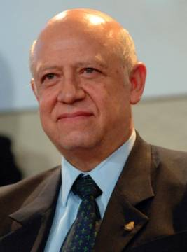

Ministro Guillermo I. Ortiz Mayagoitia
Presidente de la Suprema Corte
de Justicia de la Nación
y del Consejo de la Judicatura Federal
Presidente de la Suprema Corte de Justicia de la Nación
y del Consejo de la Judicatura Federal
El Ministro Ortiz Mayagoitia nació en Misantla, Estado de Veracruz, donde cursó la instrucción primaria y secundaria, continuando sus estudios preparatorios en la capital del Estado.
También en Jalapa cursó la carrera de Derecho; concretamente, en la Facultad de Leyes de la Universidad Veracruzana, donde obtuvo el título profesional de Licenciado en Derecho al sustentar en su examen de recepción la tesis Los Interdictos en la Legislación Veracruzana.
Fue profesor del Instituto de la Judicatura Federal, donde impartió la clase de Amparo en Materia Agraria.
Ha dictado numerosas conferencias en universidades, Barras de Abogados, asociaciones civiles dedicadas a la enseñanza del Derecho, instituciones académicas y organismos gubernamentales, tanto dentro como fuera del país.
Ha participado como ponente en una gran cantidad de seminarios, diplomados y cursos, y ha sido invitado como presentador de numerosas publicaciones jurídicas.
De entre los temas sobre los que ha disertado destacan: El artículo 105 constitucional; La estructura y dinámica del Poder Judicial de la Federación; La interpretación de la ley; La estructura de la Suprema Corte de Justicia de la Nación; El Poder Judicial de la Federación y el cumplimiento, defensa y pervivencia de la Constitución Federal; La posición de los tratados internacionales en el orden jurídico mexicano; La improcedencia de los medios de impugnación contra el procedimiento de reformas a la Constitución; La técnica de las controversias constitucionales; La administración e impartición de justicia en México; La justicia electoral en México; La impugnación de las leyes electorales; El artículo 133 constitucional; La regulación de las precampañas, entre muchos otros.
Ha publicado, entre otros textos: la “Monografía sobre Amparo en Materia Agraria”, en: Manual del Juicio de Amparo, Editorial Themis; “El Control de la Constitucionalidad de las Leyes Electorales en México”, en: Once Voces, SCJN 2000 y en el libro: Derecho Procesal Constitucional, Porrúa 2001; “Derecho Internacional y Derecho Constitucional. Un fallo interesante”, en: Anuario de Derecho Constitucional Latinoamericano, Fundación Konrad Adenauer 2000; “Comentario a la Tesis Aislada 2a. CXLII/99 en Materia Fiscal, correspondiente a la Novena Época", en: La Interpretación Constitucional de la Suprema Corte de Justicia de la Nación en Materia Tributaria, SCJN y TFJFyA, México 2001, págs. 731 a 740; “El Orden Jurídico Nacional a la Luz de la Constitución Política de los Estados Unidos Mexicanos”, en: Anuario de Derecho Constitucional Latinoamericano, Fundación Konrad Adenauer 2003.
Ha recibido reconocimientos del Tribunal Superior Agrario; del Instituto Tecnológico de Estudios Superiores de Occidente; de la Barra de Abogados del Estado de Morelos, A. C.; de los gobiernos de Veracruz, Puebla, Durango y Baja California; de la Universidad Autónoma de Tlaxcala; de la División de Educación Continua y del Centro de Educación Continua para Profesionistas del Estado de Durango, entre muchas otras instituciones docentes y académicas, todos ellos antes de asumir la Presidencia de la Suprema Corte de Justicia de la Nación.
Fue Secretario de Acuerdos del Juzgado Primero de Primera Instancia en Poza Rica, Veracruz.
Más tarde ingresó al Poder Judicial de la Federación como Actuario del Juzgado Tercero de Distrito en el Estado de Veracruz (actualmente Séptimo), con residencia en el puerto de Tuxpan, donde también fungió como Secretario.
Posteriormente, fue nombrado Secretario de Estudio y Cuenta de la Suprema Corte de Justicia de la Nación, donde quedó adscrito a la Segunda Sala.
Fue Juez de Distrito en el Estado de Oaxaca y en el Distrito Federal.
A partir del 9 de marzo de 1981 asumió el cargo de Magistrado de Circuito, habiendo estado adscrito a los Tribunales Colegiados de Villahermosa, Tabasco, de la ciudad y puerto de Veracruz y al Segundo Tribunal Colegiado en Materia Administrativa en el Distrito Federal.
El 27 de octubre de 1993, a propuesta del Pleno de la Suprema Corte de Justicia de la Nación, la Comisión Permanente del Congreso de la Unión lo nombró Magistrado de la Sala de Segunda Instancia del Tribunal Federal Electoral, hoy Tribunal Electoral del Poder Judicial de la Federación.
El 27 de enero de 1995 fue designado por el Senado de la República Ministro de la Suprema Corte de Justicia de la Nación, cargo que asumió el 1o. de febrero del mismo año al rendir la protesta constitucional.
Quedó adscrito a la Segunda Sala, de la que resultó electo Presidente, por el término de dos años, a partir de enero del año 2000.
Su nombramiento como Ministro de la Suprema Corte de Justicia de la Nación concluirá el día 30 de noviembre del año 2012.
Fue electo Presidente del más Alto Tribunal del país el 2 de enero de 2007, para el periodo que concluye el 31 de diciembre de 2010.